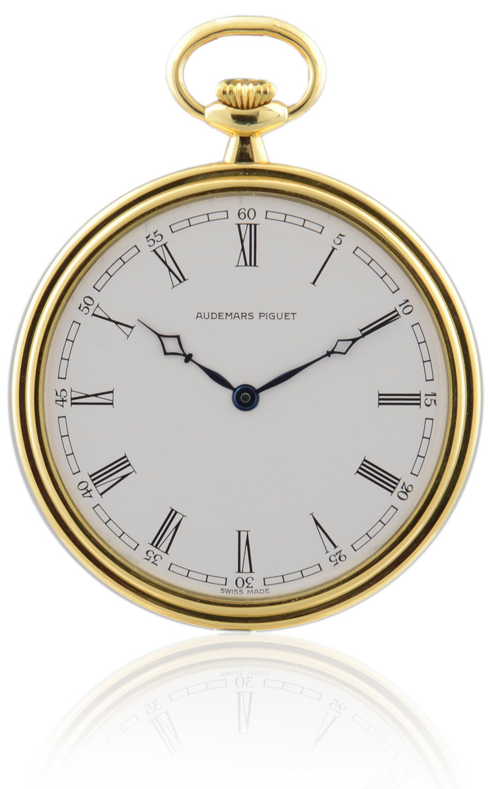
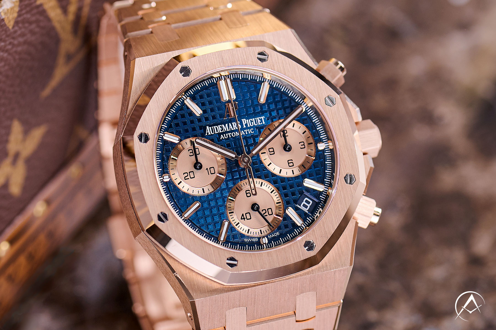
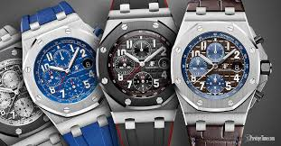
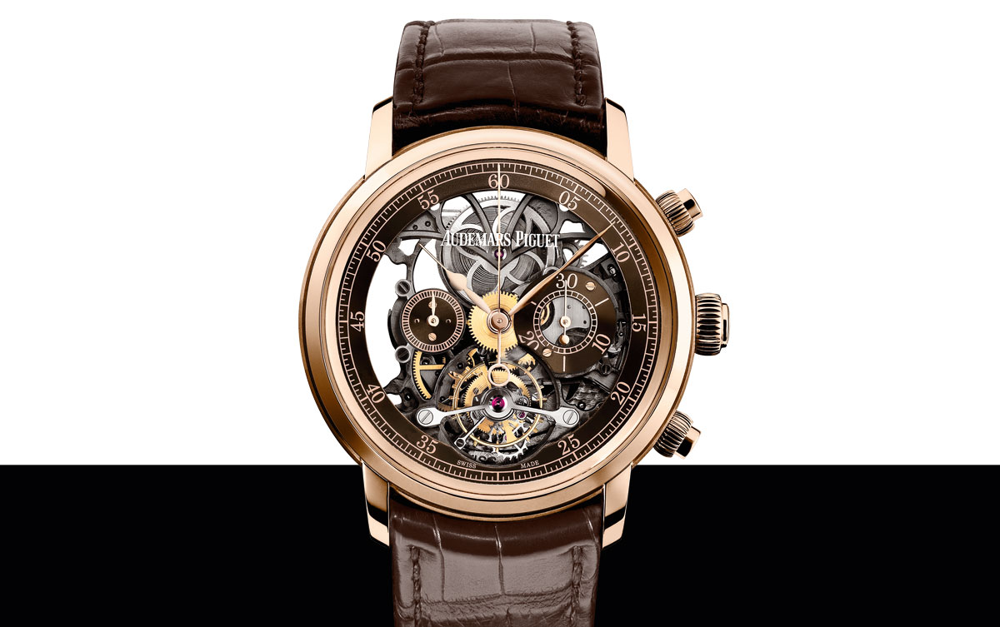
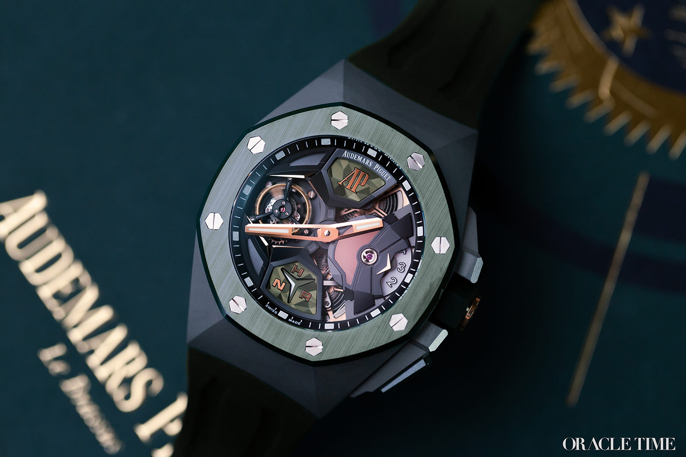
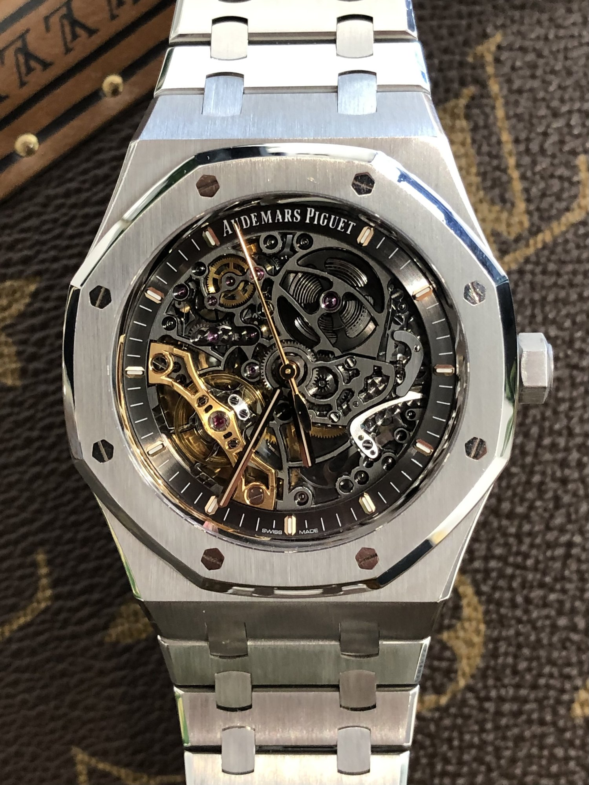
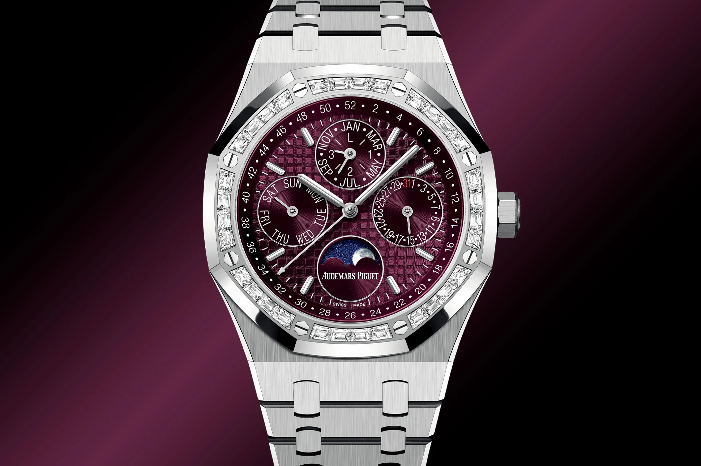
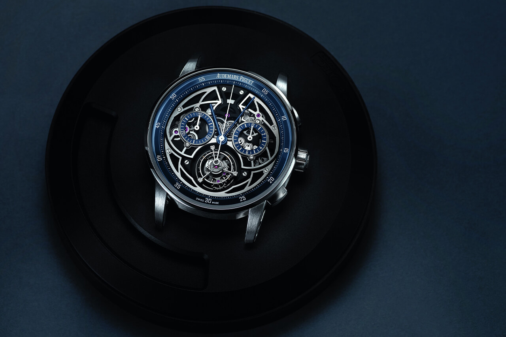

Audemars Piguet
Founded: 1875
Founder: Jules Louis Audemars and Edward Auguste Piguet
History of Audemars Piguet
Audemars Piguet (AP) was founded in 1875 by Jules-Louis Audemars and Edward-Auguste Piguet in Le Brassus, Switzerland. The company quickly gained a reputation for precision and innovation, creating high-quality, complex timepieces. In 1972, AP revolutionized the watch industry with the introduction of the Royal Oak, a luxury sports watch featuring an integrated steel bracelet and a unique octagonal bezel, which became iconic. Over the years, Audemars Piguet has continued to push boundaries with complicated and artistic designs, solidifying its place as one of the most prestigious Swiss watchmakers. Today, it is renowned for its craftsmanship and exclusive timepieces.
First Watch of AP
AP Minute repeter Pocket watch
Material: Brass, silver, gold
Made: 1875
Price:The exact price of the first pocket watches isn't specified
10 Notable AP Watches
1.Royal Oak
Material: Stainless steel
Made: 1972
Price:$20,000+ (depending on model)
Why It’s Popular: The Royal Oak was the first luxury sports watch made from stainless steel and broke away from traditional watch designs with its integrated bracelet, octagonal bezel, and screws. It set a new precedent for luxury sports watches and remains one of the most recognizable timepieces in the world.
2.Millenary

Material: White Gold, Stainless Steel, Rose Gold
Made: 1995
Price: $20,000 to $100,000+ (depending on the model and materials)
Why It’s Popular: The Omega Constellation is known for its classic and elegant design, with a star at 6 o'clock representing the brand’s commitment to precision. It has become a symbol of Omega's watchmaking expertise.
3.Royal Oak Offshore
Material: Stainless Steel, Titanium
Made: 1993
Price:Approx.$30,000+
Why It’s Popular: The Millenary is known for its distinctive elliptical case, off-center dial, and intricate complications. It combines traditional Audemars Piguet design with modern, artistic elements, making it highly sought after by collector
4.Jules Audemars
Material: Rose Gold, Yellow Gold, Stainless Steel,Leather
Made: 2007
Price:$40,000 - $70,000 (varies based on model and materials)
Why It’s Popular: Named after the brand’s founder, the Jules Audemars collection offers classic, elegant designs with sophisticated complications. Its refined aesthetic and mechanical complexity attract collectors seeking timeless beauty and technical mastery.
5.Royal Oak Concept
Material: Titanium, Ceramic
Made: 2002
Price: $35,000 - $45,000 (depending on the specific model and materials used)
Why It’s Popular: Named after the brand’s founder, the Jules Audemars collection offers classic, elegant designs with sophisticated complications. Its refined aesthetic and mechanical complexity attract collectors seeking timeless beauty and technical mastery.
6.Royal Oak Skeleton
Material: Stainless steel, 18K rose gold, platinum
Made:2012
Price: $70,000 to $200,000+
Why It’s Popular: Featuring a skeletonized movement, the Royal Oak Skeleton allows the intricate inner workings of the watch to be visible through the dial. It’s a favorite among collectors who appreciate the technical artistry of mechanical movements.
7. Royal Oak Perpetual Calendar
Material: Stainless steel, 18K pink gold, or platinum
Made: 1992
Price:$40,000 to $150,000+
Why It’s Popular: This watch is famous for combining the classic Royal Oak design with a complex perpetual calendar complication. Its iconic design and functionality make it highly desirable among watch collectors and enthusiasts of high complications.
8. Royal Oak Offshore Tourbillon Chronograph

Material: Titanium, 18K rose gold, platinum
Made: 2011
Price: $150,000 to $500,000+
Why It’s Popular:Combining a tourbillon with a chronograph complication, this watch is a sophisticated blend of high-end complications and bold design. Its technical complexity and limited production make it highly sought after by luxury watch collectors.
9. Royal Oak Jumbo (Ref. 15202)

Material: Stainless steel, 18K white gold
Made: 2000
Price:$30,000 to $50,000+
Why It’s Popular: Known as the "Jumbo," this version of the Royal Oak is slimmer and more refined than the typical model. Its elegant design and legacy as one of the original Royal Oak pieces make it a highly collectible watch.
10.Code 11.59 Chronograph
Material: Stainless steel, 18K white gold, rose gold,leather
Made: 2019
Price: $30,000 to $70,000+
Why It’s Popular: The Code 11.59 is Audemars Piguet's new design language, featuring a round case with integrated lugs. Though it initially received mixed reactions, it has grown in popularity due to its refined elegance and AP's focus on traditional craftsmanship with modern touches.